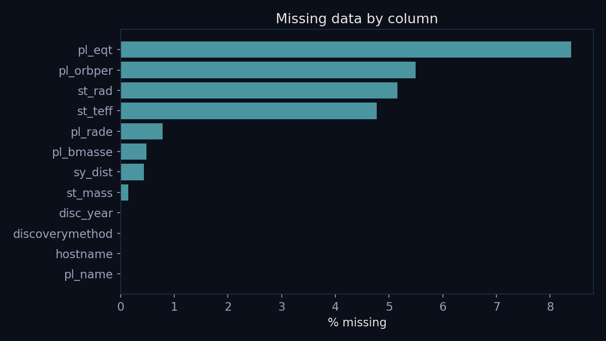
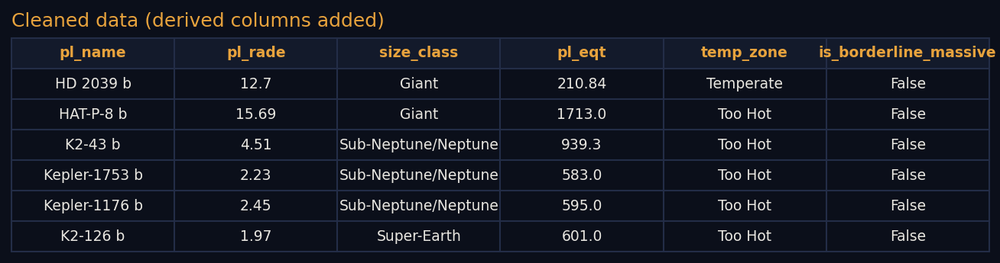
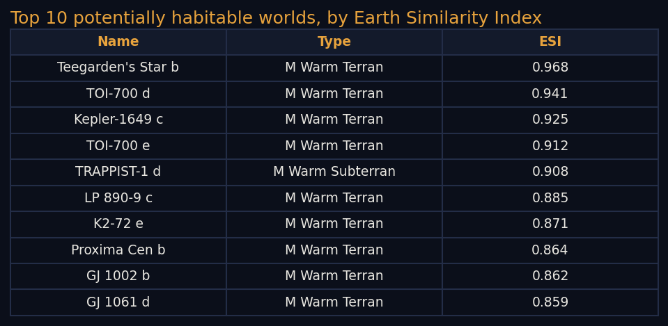

Cleaning & Prep
Cleaning & Prep
The raw pull from the NASA Exoplanet Archive contained 6,366 confirmed planets across 12 columns. Checking it directly turned up no duplicate planet names and no negative or physically impossible values in any numeric column, so nothing needed to be discarded on those grounds. What it did contain was real missingness: several hundred planets are missing an equilibrium temperature, a stellar radius, or an orbital period, because not every confirmed planet has had every follow-up measurement taken. Rather than filling those gaps with estimated values this early, they were left as missing and documented, since the right way to handle them depends on which model uses that column later.

One judgment call was made explicit rather than hidden: 157 planets have an estimated mass above roughly 13 Jupiter masses, the rough boundary where the literature starts calling an object a brown dwarf instead of a planet. These are still confirmed entries in the archive, so they were kept rather than deleted, but flagged with a new column, is_borderline_massive, so later analysis can include or exclude them deliberately instead of by accident.
Two new columns were also added by discretizing existing measurements, since several of the models coming up in later modules work better with categories than raw numbers. size_class groups each planet into Earth-sized, Super-Earth, Sub-Neptune/Neptune, or Giant based on radius. temp_zone groups each planet into Too Cold, Temperate, or Too Hot based on estimated equilibrium temperature, using roughly 200 to 320 Kelvin as the range where liquid water is plausible. Both are simple, transparent rules meant as a starting point, not a final answer.
The cleaned NASA data was then merged with the PHL Habitable Worlds Catalog by planet name. Of 6,366 planets, 5,565 matched, and each matched planet now carries the catalog's own habitability classification (not habitable, conservative sample, or optimistic sample) and its Earth Similarity Index. The 801 planets without a match were confirmed after the catalog's last update and simply have not been assessed by it yet, a gap in coverage rather than a data error. This merge matters more than the rough temp_zone estimate above, since it is a published, expert-reviewed classification rather than a simple temperature cutoff, and the two can now be compared directly.


Full cleaned and merged file: exoplanets_clean.csv (6,366 rows, 20 columns). Cleaning and merging code: clean_and_visualize.py (Python, uses pandas).